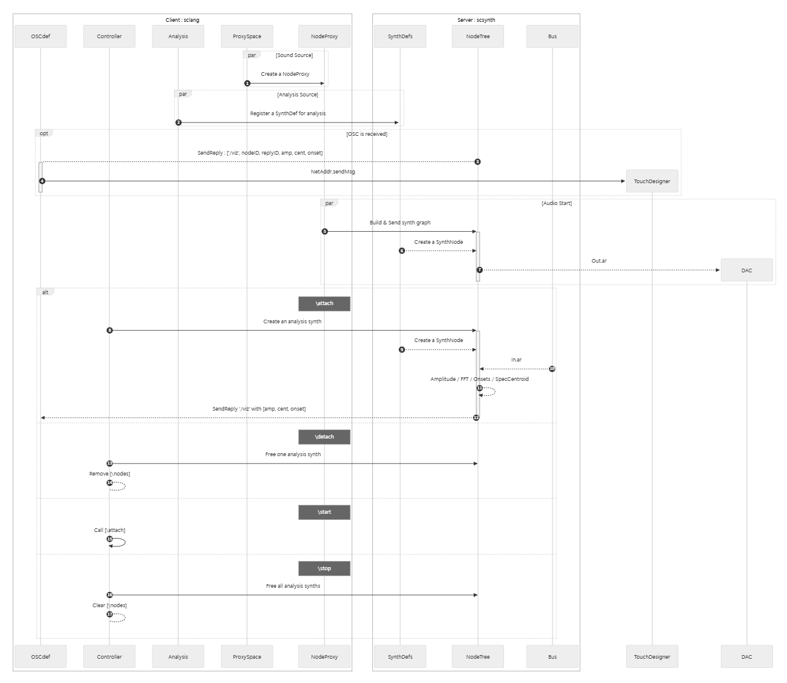

TOOLS
SuperCollider / TouchDesigner / Blender
SuperColliderとTouchDesignerの間を、ライブコーディングに適した接続を実現させるためのツール。将来的な制作での使用を想定した開発。
映像はSuperColliderで作成した雨音の、強弱や雨量をライブコーディングに合わせてリアルタイムで解析し、TouchDesignerで作成した雨の映像に、OSC通信で受け取った解析データと対応させた試作品。

音源の生成には NodeProxy を利用し、逐次的に Synth を生成することで柔軟なライブ操作を可能にした。
IDE 側（sclang）の負担を軽減するため、音声解析はサーバー側（scsynth）で実行し、その結果を OSC メッセージとして送信する。 解析データは プッシュ型（イベント駆動） で送られ、SendReply によって sclang 側に届き、ルーター（OSCdef）を介して TouchDesigner など外部ソフトウェアへ転送する。
NEXT